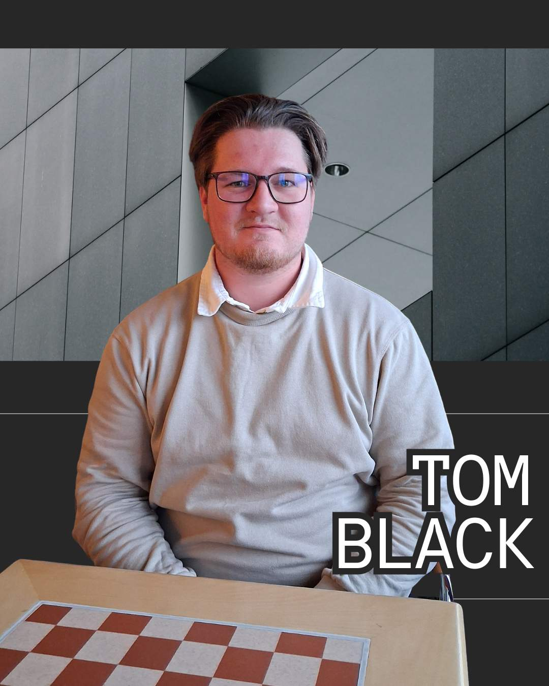

Hi! My name is Tom Black and I am a front-end web developer. I love front-end web design and am passionate about WordPress. My main focus within front-end is to create modern, responsive web experiences. I specialize in HTML, CSS, and JavaScript, and I strive to make clean, user-friendly interfaces.

Portfolio
Above Showcases a WordPress site, A walkthrough of the Reskin WordPress site, highlighting integrated Google reviews, interactive treatment sliders, and an e-commerce section for branded products. I used a child theme to make this website and am eager to learn more about CSS styling to make the website more interactive.